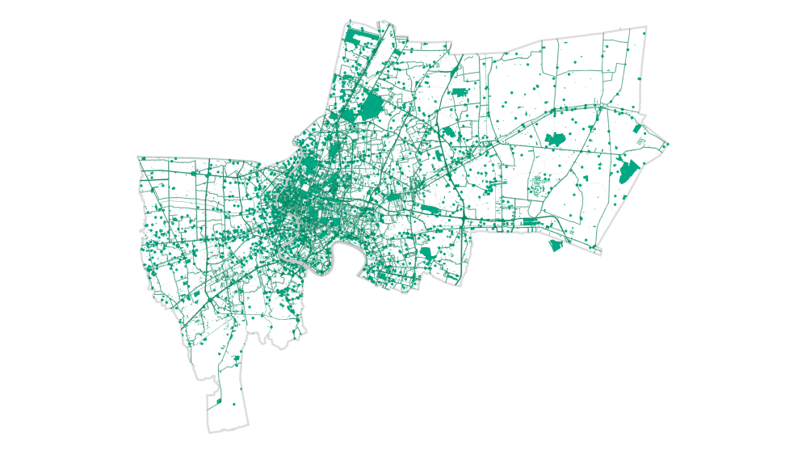
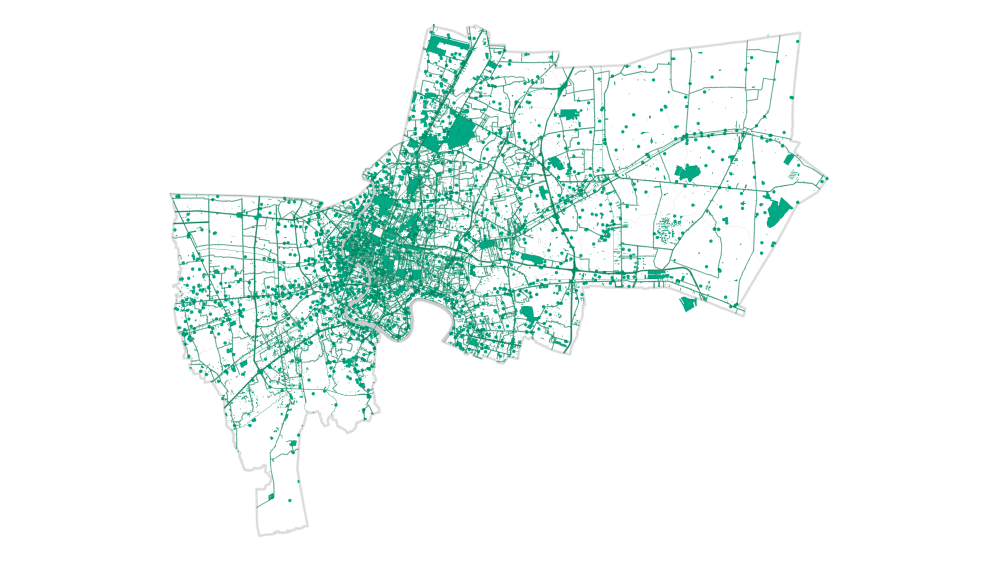

เมื่อกรุงเทพมหานครจะเป็นเมืองสีเขียว 15 นาที
เมือง 15 นาที ไม่ใช่เพียงวาทะกรรมทางการเมือง หากแต่เป็นนโยบายที่เมืองหลายเเห่งทั่วโลก กำลังกล่าวถึง ว่าด้วย
“เมืองที่ใช้เวลาในการเดินทาง 15 นาที สู่จุดหมายปลายทางในชีวิตประจำวัน”
แล้วกรุงเทพมหานครจะเป็นเมืองสีเขียว 15 นาที ได้จริงหรือ
หากพูดถึงพื้นที่สีเขียวในเมือง ไม่เพียงแค่เป็น “สีเขียว” ของเมืองเท่านั้น หากแต่ คือ…
พื้นที่ส่งเสริมสุขภาวะของประชาชน
สวนวชิรเบญจทัศ (สวนรถไฟ)
หากพูดถึงพื้นที่สีเขียวในเมือง ไม่เพียงแค่เป็น “สีเขียว” ของเมืองเท่านั้น หากแต่ คือ…
พื้นที่ส่งเสริมระบบนิเวศน์เมืองและการเรียนรู้
สวนป่าเบญจกิติ
หากพูดถึงพื้นที่สีเขียวในเมือง ไม่เพียงแค่เป็น “สีเขียว” ของเมืองเท่านั้น หากแต่ คือ…
พื้นที่ส่งเสริมความสัมพันธ์ทางสังคมและความมั่นคงปลอดภัยทางอาหาร
พื้นที่เกษตรชุมชน
หากพูดถึงพื้นที่สีเขียวในเมือง ไม่เพียงแค่เป็น “สีเขียว” ของเมืองเท่านั้น หากแต่ คือ…
พื้นที่ส่งเสริมศักยภาพของผู้คนในช่วงวิกฤต
สวนสาธารณะ

ปัจจุบัน
กรุงเทพมหานครเป็นเมืองที่ …
ปัจจุบัน
กรุงเทพมหานครเป็นเมืองที่ …
เขียวน้อย
กรุงเทพฯ เป็นเมืองเขียวน้อย
มีพื้นที่สีเขียวเฉลี่ยอยู่ที่
7.60
ตารางเมตรต่อคน
ปัจจุบัน
กรุงเทพมหานครเป็นเมืองที่ …
เขียวไกล
กรุงเทพฯ เป็นเมืองเขียวไกล
ระยะทางเฉลี่ยในการเข้าถึง
พื้นที่สีเขียวที่ใกล้ที่สุดคือ
60 นาที หรือประมาณ
4.5
กิโลเมตร
ปัจจุบัน
กรุงเทพมหานครเป็นเมืองที่ …
หนาแน่น
กรุงเทพฯ เป็นเมืองหนาแน่น
พื้นที่เมืองชั้นในและเมืองชั้นกลาง
มีจำนวนประชากรที่หนาแน่น
มีที่ดินจำกัด เนื่องจาก
เป็นพื้นที่อยู่อาศัยของผู้คนในเมือง
ด้วยสถานการณ์
ด้านพื้นที่สีเขียวของเมืองเช่นนี้
คำถามสำคัญก็คือจะทำอย่างไรให้
สวน 15 นาทีนี้ เกิดขึ้นจริงได้
จะเอาที่ดินมาได้อย่างไร ?
จะเอางบประมาณมาจากไหน ?
จะต้องใช้งบประมาณเท่าไหร่ ?
จะต้องใช้งบประมาณเท่าไหร่ ?
ด้วยสถานการณ์
ด้านพื้นที่สีเขียวของเมืองเช่นนี้
คำถามสำคัญก็คือจะทำอย่างไรให้
สวน 15 นาทีนี้ เกิดขึ้นจริงได้
ยิ่งไปกว่านั้น กรุงเทพมหานคร
ยังเต็มไปด้วยข้อจำกัดเรื่องอำนาจ
และมาตรการต่าง ๆ รวมถึง
มาตรการทางภาษี ซึ่งเป็นความท้าทายของ
การพัฒนาสวน 15 นาที ในพื้นที่เมืองที่มีราคาที่ดินสูง
ลำพังเพียงมาตรการทางภาษีอย่างเดียว
ไม่สามรถสร้างเเรงจูงใจได้มากพอที่จะทำให้มีการพัฒนา
หรือยกที่ดินของเอกชนในการพัฒนา
เป็นพื้นที่สีเขียวสาธารณะของเมืองได้
แฮค! หาวิธีให้คนกรุงเทพฯ เข้าถึงพื้นที่สีเขียวใน 15 นาที
“แฮค”เพื่อ …
สร้างทางเลือกใหม่ ลดขั้นตอนการดำเนินการแบบเดิม ๆ
หรือเพื่อเพิ่มประสิทธิภาพการทำงาน สู่โอกาสในการสำเร็จและเกิดขึ้นจริง
การแฮคในครั้งนี้ จึงไม่จำกัดเพียงการออกแบบโดยกลุ่มสถาปนิกเท่านั้น
แต่ต้องการความรู้ ความเชี่ยวชาญจากหลากหลายศาสตร์ไม่ว่าจะเป็นมาตรการทางผังเมือง
มาตรการทางกฎหมาย หรือมาตรการทางเศรษฐศาสตร์
บันได 6 ขั้น ของการได้มาซึ่งสวน 15 นาที

ซึ่งตลอดทั้ง 6 ขั้นตอนนี้จะดำเนินการผ่าน
การสร้างความร่วมมือของทุกภาคส่วนในรูปแบบ 4Ps Public Private People Partnerships
กรุงเทพในปัจจุบัน
มาลองดูความเป็นไปได้ในการเพิ่มพื้นที่สีเขียวให้กรุงเทพฯ
เป็นเมืองสีเขียว 15 นาที เดิมกรุงเทพฯ มีพื้นที่สีเขียว
ประมาณ 5.23 ตารางเมตรต่อคน
พื้นที่สวน 7 ประเภท
5.23
ตร.ม. ต่อคน
ขั้นที่ 1
หากกรุงเทพฯ จะพัฒนาพื้นที่สีเขียวให้ได้มาตรฐาน
WORLD HEALTH ORGANIZATION
STANDARD
ประมาณ 8.90 ตารางเมตรต่อคน
จะต้องดำเนินการปรับเปลี่ยน
พื้นที่ใต้ทางด่วน
พื้นที่โล่งว่างตามผังเมืองรวม
พื้นที่สวน 7 ประเภท
เทียบเท่ากับ
WHO
8.90
ตร.ม. ต่อคน
ขั้นที่ 2
หากกรุงเทพฯ
จะพัฒนาพื้นที่สีเขียวให้ได้มากขึ้นเทียบเท่ากับกรุงปารีส
ประมาณ 13.40 ตารางเมตรต่อคน
จะต้องดำเนินการปรับเปลี่ยน
พื้นที่วัด สถานที่ราชการ
พื้นที่สนามกอล์ฟ พื้นที่ทหาร
พื้นที่ใต้ทางด่วน
พื้นที่โล่งว่างตามผังเมืองรวม
พื้นที่สวน 7 ประเภท
เทียบเท่ากับ
กรุงปารีส
13.40
ตร.ม. ต่อคน
ขั้นที่ 2
หากเพิ่มพื้นที่ริมถนนสายหลัก/สายประธาน
ตามมาตราการทางผังเมืองที่กำหนดพื้นที่ถอยร่น
ตามแนวถนนเป็นพื้นที่สีเขียวและปรับเปลี่ยนพื้นที่หลังคา
อาคารขนาดใหญ่จากพื้นที่ดาดแข็งให้กลายเป็นพื้นที่สีเขียว
บนหลังคา ดังเช่นนโยบายของหลายเมือง
ที่ดำเนินการอยู่ในปัจจุบัน
ประมาณ 18.90 ตารางเมตรต่อคน
จะต้องดำเนินการปรับเปลี่ยน
พื้นที่ริมถนนสายประธาน-รอง
พื้นที่สวนหลังคาอาคารขนาดใหญ่
พื้นที่วัด สถานที่ราชการ
พื้นที่สนามกอล์ฟ พื้นที่ทหาร
พื้นที่ใต้ทางด่วน
พื้นที่โล่งว่างตามผังเมืองรวม
พื้นที่สวน 7 ประเภท
เทียบเท่ากับ
กรุงลอนดอน
18.90
ตร.ม. ต่อคน
แต่ที่น่าเศร้าก็คือ …
เเม้ว่าเราจะพยายามถึงขนาดนี้แล้ว
พื้นที่สวนสาธารณะสีเขียวในเมือง
อยู่ในระยะที่เข้าถึงเฉลี่ยเพียง 60 นาทีเท่านั้น
ขอบเขตบริการของ
สวนสาธารณะ
4.5 กิโลเมตร
หากพัฒนาตามยุทธศาสตร์ระดับเมือง
ค่าเฉลี่ยการเข้าถึงพื้นที่สวนสาธารณะที่ใกล้ที่สุดของ
คนกรุงเทพฯ จะอยู่ในระยะที่เข้าถึงเฉลี่ย 30 นาที
ขอบเขตบริการของ
สวนสาธารณะ
2.5 กิโลเมตร
ผลลัพธ์ของ GREENER BANGKOK HACKATHON 2022
จากข้อเสนอแนวทางการออกแบบและความเป็นไปได้
90 ทีม 66 ข้อเสนอ
ทั้งด้านการออกแบบและกลไกมาตรการ
นิสิตนักศึกษาคณะสถาปัตยกรรมศาสตร์ คณะรัฐศาสตร์ และคณะพาณิชยกรรมศาสตร์และการบัญชี และมืออาชีพ ทั้งสถาปนิก
นักผังเมือง ภูมิสถาปนิก นักกฎหมายเฉพาะทาง นักศึกษาปริญญาโทและเอก อาจารย์ ผู้จัดการโครงการ ผู้ประสานงาน
นักออกแบบนวัตกรรม นักวิจัยนวัตกรรม นักพัฒนาโปรแกรม นักออกแบบประสบการณ์และผลิตภัณฑ์ Project Marketing Officer
Product Operation Specialist ฯลฯ
ข้อเสนอแบ่งตามประเภทที่ดิน
ทำให้ได้โอกาสในการพัฒนาพื้นที่สีเขียวรูปแบบใหม่ ๆ ทั้งในพื้นที่ของรัฐ กึ่งรัฐ และที่ดินเอกชน อีกกว่า 21 ความเป็นไปได้
อาทิ ในพื้นที่ราชพัสดุ พื้นที่โรงเรียน พื้นที่ริมทางรถไฟ พื้นที่ระบบขนส่งสาธารณะ พื้นที่สะพานลอย พื้นที่ซอยตัน
หรือในพื้นที่ธนาคารสาขา พื้นที่ร้านสะดวกซื้อ หรือสวนกระถางเคลื่อนที่
11 ประเภท
ที่ดินรัฐ
1. ที่ราชพัสดุ (ที่ดินธนารักษ์)
2. พื้นที่โรงเรียน
3. พื้นที่วัด ศาสนสถาน
4. ศูนย์สาธารณสุข กทม.
5. พื้นที่ใต้ทางด่วน
6. พื้นที่ริมถนน/ทางเท้า
7. พื้นที่ริมทางรถไฟ
8. สะพานลอย
9. พื้นที่ทางยกระดับ/วงแหวน
10. พื้นที่ท้ายซอยตัน
11. พื้นที่ในระบบขนส่งมวลชน/รถไฟฟ้า/ป้ายรถเมล์
21
ความเป็นไปได้ใหม่
จากความเป็นไปได้ดังกล่าว ตามข้อเสนอของ GREENER BANGKOK HACKATHON 2022
ในที่ดินของรัฐ จากการเพิ่มพื้นที่ราชพัสดุ พื้นที่โรงเรียน พื้นที่ศูนย์สาธารณสุขชุมชน พื้นที่ริมทางรถไฟ
พื้นที่สะพานลอย และพื้นที่ซอยตัน จะทำให้กรุงเทพมีพื้นที่สีเขียวสาธารณะกว่า 20.2 ตารางเมตรต่อคน
และหากเพิ่มความเป็นไปได้ในที่ดินเอกชน อาทิ พื้นที่เอกชนรกร้าง พื้นที่ลานจอดรถ ธนาคารสาขา
ร้านสะดวกซื้อ พื้นที่ระหว่างรั้ว พื้นที่ว่างตามกฎหมายอาคาร พื้นที่ระเบียง พื้นที่เขียวในอาคาร
และสวนกระถางเคลื่อนที่ กรุงเทพจะมีพื้นที่สีเขียวสาธารณะกว่า 24.5 ตารางเมตรต่อคน
และหากเพิ่มความเป็นไปได้ในที่ดินเอกชน อาทิ พื้นที่เอกชนรกร้าง พื้นที่ลานจอดรถ ธนาคารสาขา
ร้านสะดวกซื้อ พื้นที่ระหว่างรั้ว พื้นที่ว่างตามกฎหมายอาคาร พื้นที่ระเบียง พื้นที่เขียวในอาคาร
และสวนกระถางเคลื่อนที่ กรุงเทพจะมีพื้นที่สีเขียวสาธารณะกว่า 24.5 ตารางเมตรต่อคน
 

1. ที่ราชพัสดุ (ที่ดินธนารักษ์)
2. พื้นที่โรงเรียน
3. พื้นที่วัด ศาสนสถาน
4. พื้นที่ในระบบขนส่งมวลชน/รถไฟฟ้า/ป้ายรถเมล์
5. พื้นที่ใต้ทางด่วน
6. พื้นที่ริมถนน/ทางเท้า
7. พื้นที่ริมทางรถไฟ
8. สะพานลอย
9. พื้นที่ทางยกระดับ/วงแหวน
10. พื้นที่ท้ายซอยตัน
11. ศูนย์สาธารณสุข กทม.
12. พื้นที่เอกชนร้าง/รอการพัฒนา
13. พื้นที่ลานจอดรถ
14. ธนาคารสาขา
15. ร้านสะดวกซื้อ
16. พื้นที่ว่างระหว่างรั้ว
17. พื้นที่ว่างตามกฎหมายอาคาร
18. พื้นที่หลังคา
19. พื้นที่ระเบียง/กันสาด และส่วนยื่นอาคาร
20. พื้นที่เขียวในอาคาร
21. สวนกระถางเคลื่อนที่
1. ที่ราชพัสดุ (ที่ดินธนารักษ์)
2. พื้นที่โรงเรียน
3. พื้นที่วัด ศาสนสถาน
4. พื้นที่ในระบบขนส่งมวลชน/รถไฟฟ้า/ป้ายรถเมล์
5. พื้นที่ใต้ทางด่วน
6. พื้นที่ริมถนน/ทางเท้า
7. พื้นที่ริมทางรถไฟ
8. สะพานลอย
9. พื้นที่ทางยกระดับ/วงแหวน
10. พื้นที่ท้ายซอยตัน
11. ศูนย์สาธารณสุข กทม.
12. พื้นที่เอกชนร้าง/รอการพัฒนา
13. พื้นที่ลานจอดรถ
14. ธนาคารสาขา
15. ร้านสะดวกซื้อ
16. พื้นที่ว่างระหว่างรั้ว
17. พื้นที่ว่างตามกฎหมายอาคาร
18. พื้นที่หลังคา
19. พื้นที่ระเบียง/กันสาด และส่วนยื่นอาคาร
20. พื้นที่เขียวในอาคาร
21. สวนกระถางเคลื่อนที่
ข้อเสนอ GBH2022
ที่ดินรัฐ
20.2
ตร.ม. ต่อคน
ข้อเสนอ GBH2022
ที่ดินรัฐ-เอกชน
24.5
ตร.ม. ต่อคน
ดังนั้น หากดำเนินการตามข้อเสนอ
ทั้ง 66 ข้อเสนอที่กล่าวข้างต้น
ได้ค่าเฉลี่ยการเข้าถึงพื้นที่สวนสาธารณะ
ที่ใกล้ที่สุดของคนกรุงเทพ
ได้ถึง 800 - 1000 เมตร และนั่นคือ
ระยะเวลา
15 นาที
ขอบเขตบริการของ
สวนสาธารณะ
800-1,000 เมตร
เต่เรื่องราวของการทำกรุงเทพฯ ให้เป็นเมืองสีเขียว 15 นาที
ยังไม่จบเพียงแค่นั้นเพราะคำถามสำคัญกว่า คือ เราจะทำตามข้อเสนอข้างต้นได้อย่างไร ?
มาลองดูความเป็นไปได้ในการดำเนินการกัน
ข้อเสนอแบ่งตามประเภทที่ดิน
ขอบเขตการให้บริการพื้นที่สีเขียวในปัจจุบัน
ขอบเขตการให้บริการพื้นที่สีเขียวในปัจจุบัน
วิเคราะห์กับความหนาแน่นของพื้นที่เมืองประชากร
ขอบเขตการให้บริการพื้นที่สีเขียวในปัจจุบัน
วิเคราะห์กับความหนาแน่นของพื้นที่เมืองประชากร และพื้นที่ศักยภาพเดินได้
ขอบเขตการให้บริการพื้นที่สีเขียวในปัจจุบัน
วิเคราะห์กับความหนาแน่นของพื้นที่เมืองประชากร “สูงวัย” และพื้นที่ศักยภาพเดินได้
PRIORITIZING & STRATEGIZING CRITERIA
พื้นที่ที่มีความเร่งด่วน พื้นที่ยุทธศาสตร์ในการดำเนินการ
PRIORITIZING & STRATEGIZING CRITERIA
พื้นที่ที่มีความเร่งด่วน พื้นที่ยุทธศาสตร์ในการดำเนินการ

กรุงเทพฯ สู่เมืองที่ …
เขียวกว่า
เพื่อที่จะทำให้นโยบายสวน 15 นาที
ของเมืองกรุงเทพสัมฤทธิ์ผล
และเป็นหน้าที่ของพวกเรา
พลเมืองกรุงเทพทุกคน
ที่สามารถเข้ามามีส่วนร่วมกันได้
เพื่อเปลี่ยนเมืองกรุงเทพ
จากพื้นที่สีเขียว 7.60 ตร.ม. ต่อคน
24.50 ตารางเมตรต่อคน
กรุงเทพฯ สู่เมืองที่ …
เขียวใกล้
เพื่อที่จะทำให้นโยบายสวน 15 นาที
ของเมืองกรุงเทพสัมฤทธิ์ผล
และเป็นหน้าที่ของพวกเรา
พลเมืองกรุงเทพทุกคน
ที่สามารถเข้ามามีส่วนร่วมกันได้
เพื่อเปลี่ยนเมืองกรุงเทพ
จากเมืองสีเขียว 60 นาที
15 นาที
สนับสนุนโดย
กองทุนพัฒนาสื่อปลอดภัยและสร้างสรรค์
ดำเนินการโดย
ศูนย์ออกแบบและพัฒนาเมือง (UDDC) ศูนย์เชี่ยวชาญเฉพาะทางด้านยุทธศาสตร์เมือง จุฬาลงกรณ์มหาวิทยาลัย
ขอขอบคุณข้อมูลจาก
โครงการ Greener Bangkok Hackathon 2022: แฮคกรุงเทพเพื่อเมืองที่เขียวกว่า เพื่อขับเคลื่อนเมืองของเราให้เขียวกว่าที่เคย
ขอขอบคุณผู้สนับสนุนโครงการ Greener Bangkok Hackathon 2022: มูลนิธิร็อคกี้เฟลเลอร์ / สถานเอกอัครราชทูตเนเธอร์แลนด์
/ กระทรวงพลังงาน / การไฟฟ้าฝ่ายผลิตแห่งประเทศไทย / สมาคมนิสิตเก่าวิศวกรรมศาสตร์แห่งจุฬาลงกรณ์มหาวิทยาลัย /
สำนักงานกองทุนสนับสนุนการสร้างเสริมสุขภาพ (สสส.) / ธนาคารกสิกรไทย จำกัด (มหาชน) / บริษัท แมกโนเลีย ควอลิตี้
ดีเวล็อปเม้นต์ คอร์ปอเรชั่น จำกัด / บริษัท ภิรัชบุรี จำกัด / ศูนย์นิทรรศการและการประชุมไบเทค / บริษัท ไอคอนสยาม จำกัด /
บริษัท อมรินทร์พริ้นติ้ง แอนด์ พับลิชชิ่ง จำกัด (มหาชน)